Tradice olomouckého minigolfu od roku 1969 – 2 certifikovaná 18jamková hřiště WMF (Miniaturgolf & Filz), BAR MINIGOLF s víkendovým grilem a makrelami, akceptace MultiSport a 20 titulů Mistra ČR družstev!
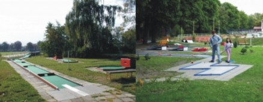
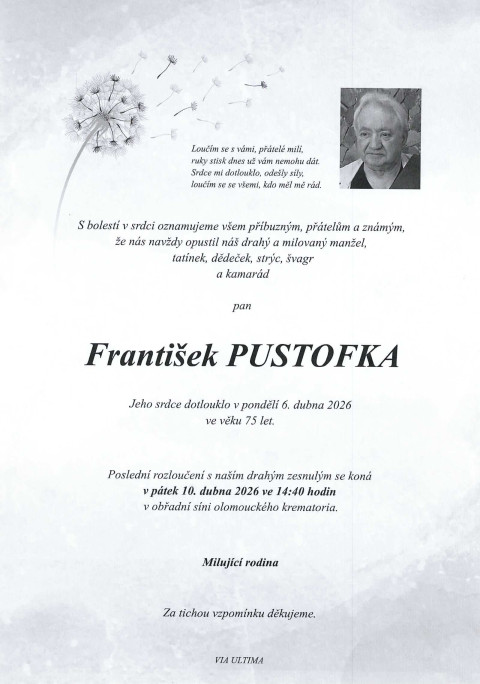
Veškeré autentické informace, historie, provozní údaje a identifikační data naší společnosti.
Vítejte v areálu Minigolf Clubu Olomouc, z.s. (LOKO Minigolf) na nábřeží Přemyslovců 932/12 v Olomouci (vedle sportovní haly TJ Lokomotiva Olomouc, kousek od Letního kina a Envelopy). Náš areál nabízí jedinečnou možnost zahrát si na dvou různých 18jamkových certifikovaných hřištích WMF: na klasickém MINIATURGOLFOVÉM hřišti (eternitové dráhy v ocelových rámech) a na švédském kobercovém hřišti FILZ / GREENGOLF.
Součástí areálu je příjemné venkovní posezení a BAR MINIGOLF, kde nabízíme točené pivo a limonádu, čerstvou kávu, čaj, nanuky a drobné pochutiny. O víkendech (pátek až neděle) pro vás navíc připravujeme vyhlášené grilované a uzené makrely, speciality z grilu a domácí hamburgery! Areál je ideální pro rodinná odpoledne, rande, školní výlety (dopoledne po telefonické dohodě), dětské oslavy i firemní turnaje.
Minigolf v Olomouci má mimořádnou historii sahající až do roku 1969, kdy bylo u příležitosti zahradnické výstavy Flora Olomouc otevřeno první hřiště ve Smetanových sadech (v prvních letech jej navštívilo přes 70 000 platících hráčů!). Náš oddíl získal v historii neuvěřitelných 20 titulů Mistra České republiky družstev a vychoval světové a evropské šampiony včetně dvojnásobné juniorské mistryně světa Moniky Minaříkové, juniorské mistryně Evropy Lucie Indrákové, mistra ČR 2025 Mariána Straška či vítěze Ceny Drahoše Válka Aleše Vítka.
| Název spolku | Minigolf Club Olomouc, z.s. |
| Adresa areálu LOKO | nábř. Přemyslovců 932/12, 779 00 Olomouc (vedle TJ Lokomotiva Olomouc) |
| IČO / Bankovní spojení | IČO: 60800496 | Číslo účtu: 153 391 006 / 0100 (Komerční banka) |
| Předseda klubu a trenér II. tř. | Pavel Gerža – tel.: +420 603 530 586 | e-mail: pavel.gerza@seznam.cz |
| Správce hřiště a BAR MINIGOLF | pí. Polzerová – tel.: +420 605 431 005 (rezervace škol, skupin a grilu) |
| Akceptované benefitní karty | MultiSport (Stříbrná, FKSP, LITE) & Olomouc region Card (20% sleva) |
Vybudování prvního hřiště ve Smetanových sadech z iniciativy Ing. Klause Horáka pod hlavičkou TJ Lokomotiva Olomouc. Obrovský boom s více než 70 000 návštěvníky.
V roce 1979 klub uspořádal Mistrovství ČSSR a v roce 1987 se olomoučtí hráči poprvé představili na Mistrovství Evropy ve Vídni.
Družstvo MGC Olomouc vybojovalo celkem 20 mistrovských titulů ČR v nejvyšší ligové soutěži a desítky medailí v jednotlivcích.
Monika Minaříková (2× zlato MSJ 2018), Lucie Indráková (zlato MEJ 2022 a úspěchy 2025), Marián Straško (Mistr ČR 2025) a ocenění Sportovec roku Olomouce 2025.
Kompletní rozpis všech kategorií, materiálů, technologií a služeb podle našeho katalogu.
Klasické soutěžní i rekreační minigolfové hřiště se zpevněnými eternitovými drahami v ocelových rámech. Přesné odrazy o mantinely a rozmanité překážky pro začátečníky i pokročilé.
Unikátní švédský systém filcových (kobercových) drah, který svým charakterem a délkou drah nejvíce připomíná skutečné golfové patování na greenu.
Přímo v areálu na vás čeká pohodové posezení pod pergolou a slunečníky. Přijďte si posedět i jen tak na pivo, kávu nebo víkendové grilované speciality!
Pořádáme dopolední programy pro základní a střední školy, firemní teambuildingové turnaje na klíč a vedeme nábor mládeže i dospělých do našeho mistrovského oddílu.
Přehledně zpracované kompletní tabulky, ceníky, technické specifikace a referenční zakázky.
V ceně každého vstupného je zapůjčení hole, míčků, výsledkové listiny a tužky. Akceptujeme karty MultiSport a Olomouc region Card!
| Kategorie vstupného / Poplatku | Cena | Platnost a podrobné podmínky |
|---|---|---|
| Základní vstupné (dospělí) | 130 Kč | Na 2 hodiny hry (včetně zapůjčení hole, míčků, zápisníku a tužky) |
| Slevněné vstupné (děti do 18 let, studenti s ISIC, senioři 65+, ZTP) | 110 Kč | Na 2 hodiny hry po předložení průkazu věku / studia / ZTP |
| Rodinné vstupné (2 dospělí + 2 děti) | 440 Kč | Výhodný rodinný balíček na 2 hodiny hry se zapůjčením kompletního vybavení |
| Permanentka na 10 vstupů (přenosná) | 1 000 Kč | Vychází jen na 100 Kč za vstup! Platí po celou sezónu |
| „Prcek“ do 100 cm výšky | ZDARMA | Děti do 100 cm v doprovodu alespoň jedné platící dospělé osoby |
| Karty MultiSport (Stříbrná, FKSP, LITE) | 0 Kč (v rámci karty) | 1 vstup denně (hra + zapůjčení vybavení) po předložení karty a dokladu totožnosti |
| Olomouc region Card | Sleva 20 % | Sleva 20 % ze základního i slevněného vstupného pro držitele karty |
| Poplatky při ztrátě nebo zničení vybavení | 100 Kč / 600 Kč | Ztráta či poškození míčku nebo košíčku: 100 Kč | Zlomení nebo zničení hole: 600 Kč |
| Roční klubové příspěvky MGC Olomouc (členství v klubu) | 1 500 Kč / 2 000 Kč | Mládež a studenti do 19 let: 1 500 Kč/rok | Dospělí: 2 000 Kč/rok (neomezený trénink) |
Při nepříznivém (deštivém) počasí je hřiště uzavřeno. Školní výlety a firemní akce lze objednat i mimo běžnou otevírací dobu (dopoledne) na tel. 605 431 005.
| Období sezóny | Pondělí – Pátek | Sobota, Neděle a Státní svátky | Poznámka k provozu |
|---|---|---|---|
| Duben – Červen (jarní sezóna) | 13:00 – 19:00 hod. | 10:00 – 19:00 hod. | Dopoledne ve všední dny rezervace pro školní výlety a skupiny |
| Červenec – Srpen (letní prázdniny) | 13:00 – 21:30 hod. | 13:00 – 21:30 hod. | Prodloužený prázdninový provoz s večerním osvětlením a grilem |
| Září – Říjen (podzimní sezóna) | 13:00 – 19:00 hod. | 10:00 – 19:00 hod. | V říjnu úprava zavírací doby dle stmívání a počasí |
| Březen & Listopad (okraj sezóny) | Dle počasí | Dle příznivého počasí | Aktuální info vždy na tel. správce 605 431 005 |
| Provoz BARU MINIGOLF & Grilu | Nápoje, pivo, káva po celou dobu | Pá–Ne: Makrely, gril a hamburgery! | Posezení otevřeno pro hráče i kolemjdoucí návštěvníky |
Přehled hlavních turnajů sezóny 2026 a největších sportovních úspěchů našeho klubu.
| Datum / Období | Událost / Osobnost klubu | Detail a dosažený úspěch |
|---|---|---|
| Sezóna 2026 (Duben–Září) | Kalendář turnajů ČMGS 2026 | MT Náměšť na Hané, GP Brno, Open Olomouc (areál LOKO), MČR Cheb, GP Děčín, Cena Drahoše Válka |
| Neděle 31. května | Den dětí na Minigolfu LOKO Olomouc | Tradiční zábavné odpoledne pro děti a rodiče se soutěžemi, odměnami a grilováním |
| Monika Minaříková | 2× Zlatá medaile z Mistrovství světa juniorů (2018) | Dvojnásobná juniorská mistryně světa a opora reprezentace ČR |
| Lucie Indráková | Zlatá medaile z ME juniorů (2022) & reprezentantka 2025 | Mistryně Evropy v kategorii juniorek a oceněná sportovkyně města Olomouce |
| Marián Straško & Aleš Vítek | Mistr ČR 2025 & Vítěz Ceny Drahoše Válka | Marián Straško – titul Mistra ČR 2025; Aleš Vítek – triumf na domácím turnaji v Olomouci |
| Partneři a podpora klubu | NSA, Statutární město Olomouc, Olomoucký kraj, SV Golf, Hopax | Činnost klubu a mládeže je podporována Národní sportovní agenturou, městem Olomouc a Olomouckým krajem |
Prohlédněte si kompletní databázi našich autentických fotografií rozdělenou do přehledných kategorií. Kliknutím na libovolný snímek otevřete detailní náhled na celou obrazovku.
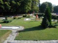
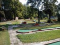
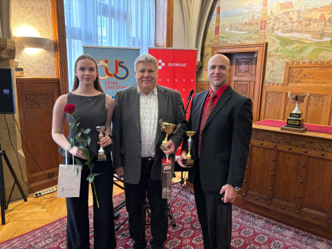
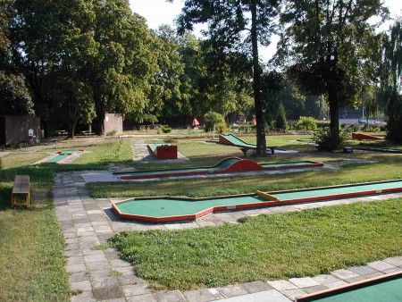
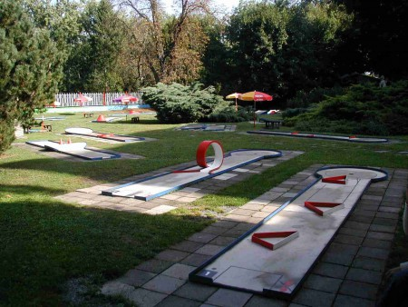
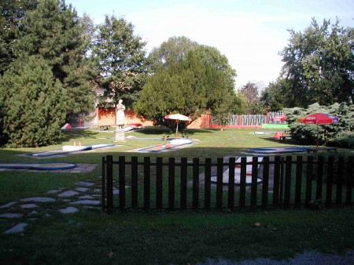
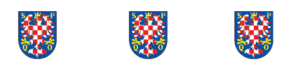
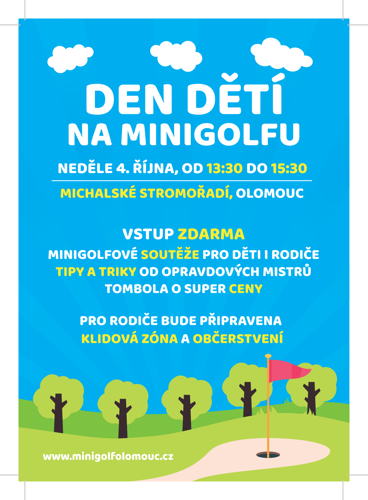
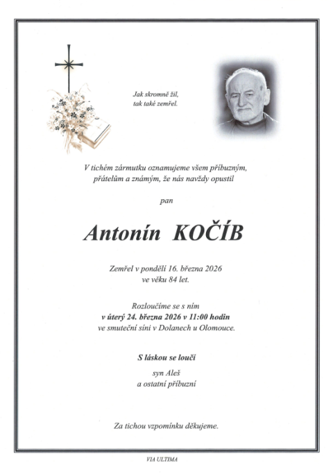
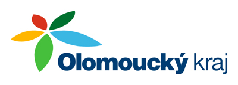
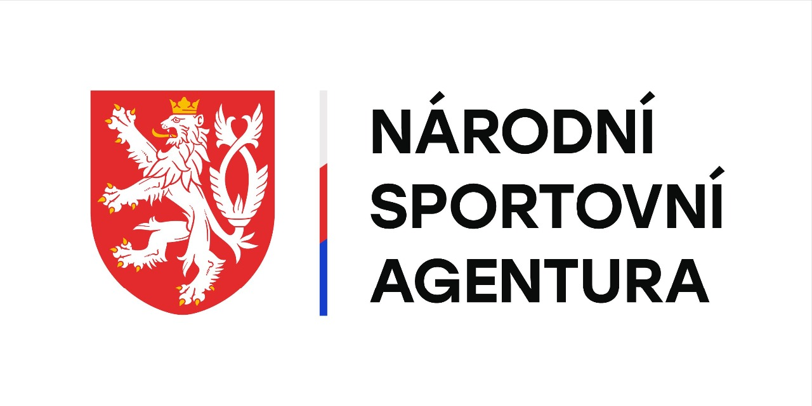
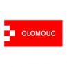
Neváhejte nám zavolat, napsat e-mail nebo nás osobně navštívit na uvedené adrese.
nábř. Přemyslovců 932/12, 779 00 Olomouc (areál u TJ Lokomotiva Olomouc / Letního kina)
Duben–Červen & Září: Po–Pá 13:00–19:00, So–Ne 10:00–19:00 | Červenec–Srpen: Po–Ne 13:00–21:30
IČO: 60800496 | DIČ: Č. účtu: 153 391 006 / 0100 (KB) | Doména: minigolfolomouc.cz
Vyplňte krátký formulář níže – ozveme se vám zpět v nejbližším možném termínu.